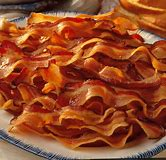

Fake Bacon Blog
Cooking bacon

Cooked bacon
Kevin Bacon
(made out of bacon)
I love bacon. No, not the organic chemistry tutorials, I'm talking about real bacon. However, not all bacon is real. Let's look at some fake bacon.
| Name | Status | Notes |
|---|---|---|
| Sir Francis Bacon | Fake | Confirmed fake through rigorous testing, and experimentation. |
| The other Francis Bacon | Fake | Thought to be grotesquely fake, but draw your own conclusion. |
| Jenny Bacon | Fake | Confirmed fake by the B.V.U. (Bacon Victims Unit) |
| Henry Bacon | Fake | Details of his monumental achievements are all Greek to me. Still, he's fake. |
| Kevin Bacon | Fake | Approximately Fake (+/- 6 deg.) |